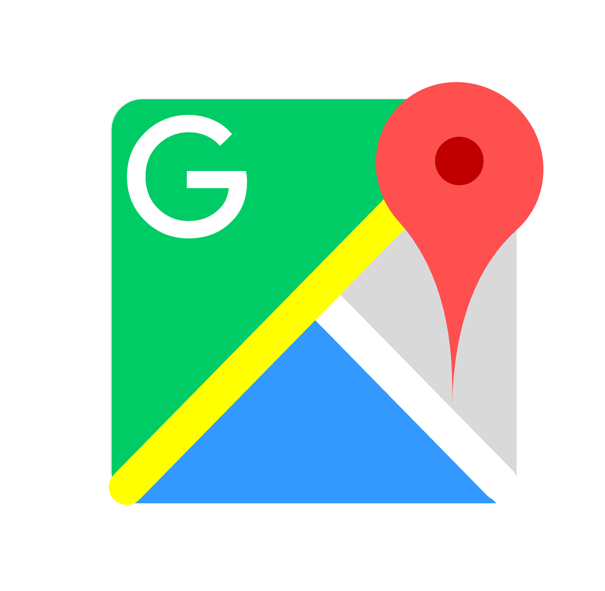
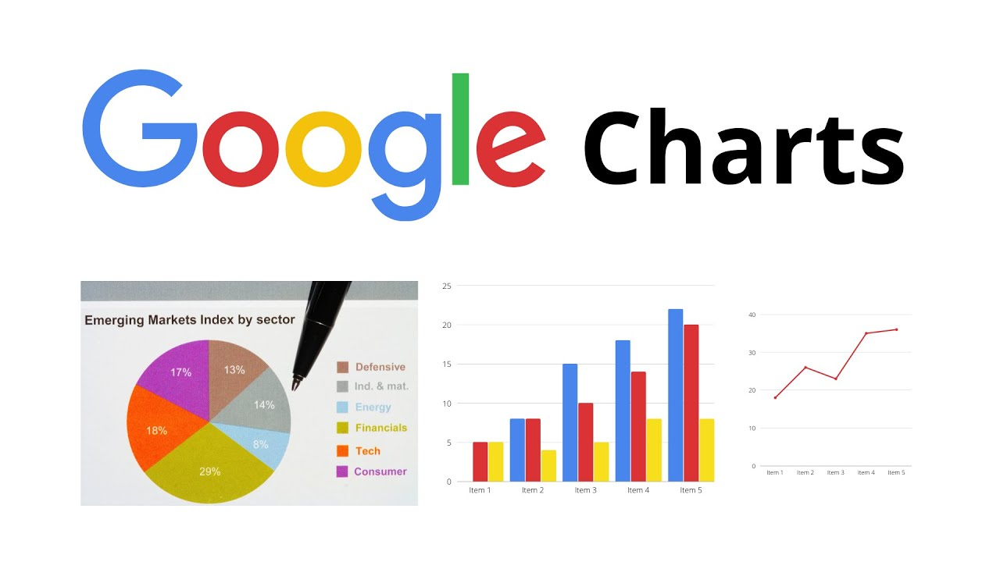

Google APIs
Ricardo Hernandez Salas
Valery Julliana Arroyo Barrantes
Gabriel Leiton Araya
Carlos Jose Ledezma Arce
Steven Alberto Arguello Vindas
Google Maps API

Maps Api y Directions Api
Se trata del Api que pone google a nuestra disposición para mostrar mapas
interactivos y calcular rutas. Antes eran un solo API pero ahora se separaron y debemos implementar
ambos.
En la siguiente demostración veremos como se calcula una ruta hacia la utn o cualquier otra
uubicación con respecto a la geolocalización de nuestro navegador. Efectivamente, siempre conocen
nuestra ubiucacion (si les damos permiso)
Google Maps API
Google Translate
Para esta demostración usaremos no el API de google translate debido a que
este necesita backened y es de pago, en su lugar usaremos directamente un widget que google
proporciona para sus
servicios de traducción, este widget es gratuito y se puede usar sin necesidad de una API key,
aunque tiene limitaciones en cuanto a personalización y funcionalidad.
Google Charts API

Google Charts
Se trata de un API de google que permite la visualizacion simple de datos.
Utiliza HTML5/SVG para asegurar compatibilidad, permitiendo crear gráficos dinámicos y funcionales de forma sencilla.